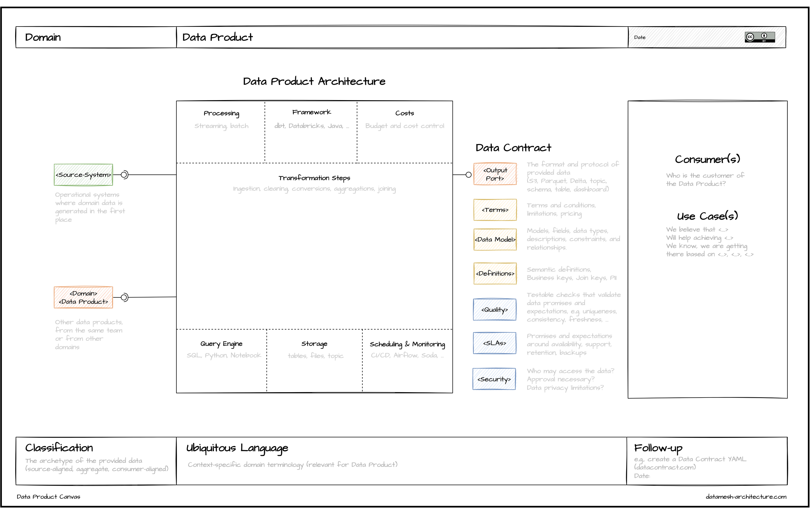

As already mentioned, Data Mesh is about the decentralization in data management. However, as with every architecture, data architecture is also a socio-technical phenomenon. Therefore, we need to consider people and processes in addition to technology for data management. Furthermore, because we have consumers for our data, these consumers expect a certain quality. Our data need to be accessible, and everyone should know where to find data. Thus, the socio-technical perspective pushes us to adopt the product thinking philosophy for data - Data Product.
What could be a Data Product? Generally, any data representation that has value for its consumers can be a good candidate. In the following, you will find a list of examples of possible Data Products::
- A database table or view
- Raw unstructured files: e.g., images or videos uploaded by users of a video portal; however, to be valuable to consumers, they should be provided with metadata.
- Data stream of data entities from a transaction system.
- Data stream representing the history of changes to the application: For example, events that relate to changes made within a billing account.
- Simple files: Data in CSV format, excel files.
- REST API: Read-optimized data exposed from applications.
- Master Data Management database.
- Features for the machine learning models.
- Visualizations and dashboard.
Architecting Data Product.
To ensure the interoperability, Data Products need to be standardized so that other domain teams can immediately consume in a convenient way. Generally, the Data Product consists of the following three groups:
- Input
- Core data unit and transformations
- Output
To establish a structured process of data product design across an organization, we propose a Data Product Canvas. Data Product Canvas is a visual framework that guides your team through the Data Product specification. In total, Data Product Canvas consists of eight building blocks:
- Data Product Name
- Domain
- Purpose and Use Case(s)
- Inbound Data Flow
- Outbound Data Flow
- Data Product Design block
- Ubiquitous Language
- Classification
Data Product Name
Each Data Product has a unique name to be identified within an organization.
Domain
Each Data Product should be implemented, evolved, and maintained by one domain team only. Therefore each Data Product belongs to exactly one domain. The following questions are relevant in this building block: Who is accountable for the Data Product? Who specifies its requirements? Who will answer questions about the Data Product? Who fixes it when it breaks?
Purpose and Use Case(s)
This building block describes the reason behind the existence of the Data Product. To identify the purpose of the Data Product, we would need to know the organizational goals, which would help us to define analytical use cases. Understanding the use cases is essential to specify the data products required to implement the use cases.
Inbound Data Flow
The first core building block describes the input data for the future Data Product. The input ports are receiving mechanism for data that will constitute the Data Product. This can be input ports define the format and protocol in which data can be read. For example, database connection string, file, API, or visualizations. We distinguish here between operational source systems and other data products, which might be either internal or from other domains.
Outbound Data Flow
The output ports define the format and protocol in which data can be exposed. For example, database connection string, file, API, or visualizations. In addition to the output ports specification
Data Product Design block
xxx
Ubiquitous Language
xxx
Classification
xxx
The proposed canvas is suitable for working collaboratively on Data Products design. The canvas might be easily used with the common online whiteboard tools like Miro or Mural. Once your organization has created a collection of data products using the Data Product Canvas, you can start connecting all data products and produce an actual mesh.